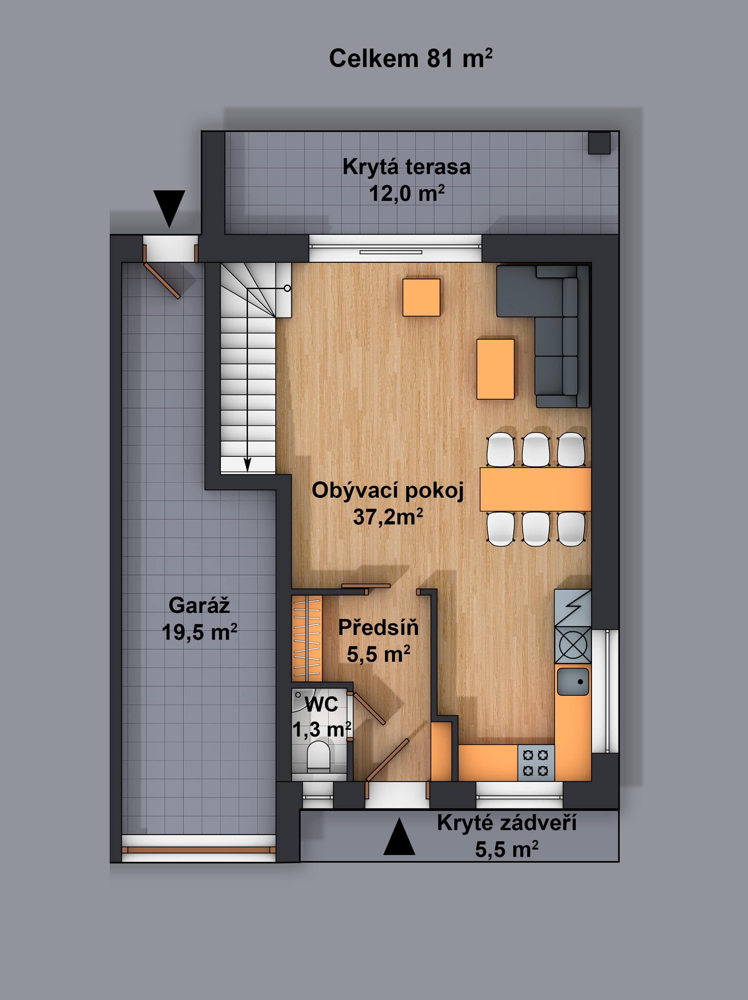
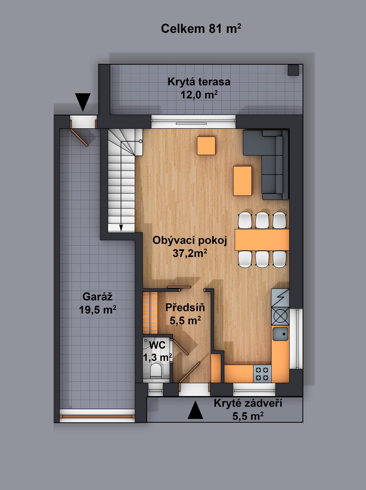

Půdorysy
-
1. patro
 -
2. patro

-
Plánek lokality

Nový projekt „Nad Prahou“ vznikl přímo na hranici obce Horoměřice a Prahy 6 Suchdol, s neuvěřitelným výhledem na celé hlavní město a od toho byl také odvozen i název celé lokality. Z oken domů je možno vidět například i katedrálu Svatého Víta na Pražském hradě. V této lokalitě bude vybudováno celkem 22 luxusních dvojdomů.
Společnost SIMEKOSTAV s.r.o., zde postupně ve třech etapách vybuduje 12 rodinných dvojdomů, které nabízí k prodeji.
Společnost SIMEKOSTAV s.r.o. působí v oblasti stavebnictví již více než 15 let a během této doby zrealizovala okolo 200 projektů. Jednalo se především o výstavbu rodinných a bytových domů, ale i komerčních a průmyslových budov. Společnost SIMEKOSTAV s.r.o. si zakládá na solidním a slušném jednání, vysoké kvalitě práce, používání prvotřídních materiálů a moderních technologií. Většinu svých zakázek tato společnost získává především na základě dobrých referencí a doporučení od předchozích spokojených zákazníků.
Nově vystavěné rodinné domy jsou nízkoenergetické dvoupodlažní domy, které jsou dispozičně koncipovány jako 4+KK o celkové podlahové ploše 146 m2. Moderní architektura jednotlivých dvojdomů je umocněna přesahy druhého nadzemního podlaží. U vstupu tento přesah tvoří zastřešené zádveří a směrem do zahrady zastřešuje prostornou terasu před obývacím pokojem. Dva rodinné domy, které tvoří dvojdům k sobě přiléhají pouze v úrovni prvního nadzemního podlaží, a to pouze částí obvodové zdi v prostoru garáže.
Jednotlivé domy pak stojí na samostatných pozemcích a každý má svou vlastní hezkou zahradu. V přízemí domu je vstupní hala s prostorem na vestavěnou skříň, toaleta, obývací pokoj spojený s kuchyní, prostorná zastřešená terasa, garáž s technickým a úložným prostorem. V druhém nadzemním podlaží domu se pak nachází chodba s prostorem na vestavěnou skříň, tři samostatné ložnice a nadstandardní koupelna s toaletou, sprchovým koutem i vanou.
Rodinné domy budou prodávány včetně dokončeného oplocení, zpevněných ploch a terénních úprav zahrady. Součástí každého dvojdomu jsou kromě garážového stání také ještě dvě parkovací místa na vydlážděném prostoru před garáží. Uliční oplocení bude provedené z gabionových sítí částečně vyplněných kamenem.
Všechny rodinné domy jsou navrženy jako nízkoenergetické stavby, což zajišťuje zejmén dobře zvolená orientace jednotlivých domů, použití skutečně kvalitních stavebních materiálů, jakož i důraz na řemeslné zpracování. Ke stavbě domů byly použity pálené broušené cihelné bloky, kvalitní izolační systém zateplení celého domu v tloušťce 140 respektive 180mm, s použitím fasádního systému se strukturovanou fasádou. Domy jsou osazovány kvalitními izolačními a protihlukovými okny včetně dálkově ovládaných venkovních před okenních žaluzií. To vše zajišťuje dostatečnou ochranu před letním sluncem nebo případným vnějším hlukem a tím poskytuje záruku velmi komfortního a klidného dlouhodobého užívání.
Vytápění domů je zajištěno pomocí rekuperace vnitřního vzduchu v kombinaci s velmi příjemným výhřevem podlah v koupelně, kuchyni a vstupní hale a toaletě. Systém rekuperace vzduchu umožňuje i chlazení v letních měsících. Toto spojení zajišťuje nejen tepelný komfort v zimních i letních měsících, ale také nízké provozní náklady a zejména zdravotně příznivější prostředí díky větší čistotě a cirkulaci vzduchu ve všech místnostech.
Celá technologie výměníku tepelné energie spolupracuje s venkovním tepelným čerpadlem. Rekuperace vzduchu ve spojení s tepelným čerpadlem představuje velkou úsporu provozních nákladů budoucím majitelům rodinných domů.
Při stavbě jednotlivých domů byly použity moderní materiály a technologie tak, aby všechny tyto domy splňovaly parametry pro nadčasové, ale i nadstandardní moderní bydlení.
Při zařizování vnitřních prostor domů jsou použity luxusní velkoformátové obklady a dlažby. Stejně tak jsou používána i vysoce kvalitní sanitární zařízení. Ve vybavení domů samozřejmě nechybí moderní vstupní i vnitřní dveře, včetně posuvných. Kvalitní podlahové krytiny vkusně ladí s použitou keramickou dlažbou, keramickými obklady a celkovým interiérem každého domu. Do druhého nadzemního podlaží se vystupuje po moderním ocelovém schodišti s dřevěnými nášlapy z masivního dubu a nerezovým zábradlím.
V domech samozřejmě nechybí zabezpečovací zařízení, dostatek anténních a slaboproudých rozvodů. V domech je provedená i příprava pro „inteligentní dům“.
To vše ve svém souhrnu představuje velmi moderní, vysoce kvalitní nízko energetický dům, který leží na hranici Prahy 6, s nádherným výhledem na Prahu.
Lokalita „Nad Prahou“ leží přímo na hranici obce Horoměřice a městské části Prahy 6, Suchdol, s neuvěřitelným výhledem na velkou část hlavního města včetně katedrály Svatého Víta na Pražském hradě. Horoměřice dále sousedí s městskými částmi Prahy 6, Lysolaje a Nebušice.
Jednou z největších předností bydlení v lokalitě „ Nad Prahou“ je výborné dopravní spojení autem i veřejnou dopravou do centra Prahy, ale i letecky do celého světa. Cesta autobusem na metro Bořislavka trvá jen 8 minut a do Dejvic jede autobus 15 minut. Vynikající dopravní dostupnost v kombinaci s jedinečnou polohou v klidném prostředí zeleně znásobuje pocit mimořádně kvalitního bydlení.
Jen pár set metrů jsou vzdáleny dva nové pavilony mateřské školy a o kousek dál v centru obce stojí nově vybudovaná základní devítiletá škola. V Horoměřicích je pro jejich obyvatele k dispozici veškerá občanská vybavenost včetně několika lékařských ordinací, mnoha restaurací a obchodů včetně nové velkoprodejny Lidl.
Horoměřice jsou převážně obklopeny volnou přírodní krajinou na západě sousedí s Tuchoměřickým lesem a na jihu s lesy chráněného krajinného parku Šáreckého údolí, které se rozprostírá na stovkách hektarů. V okolí je velké množství turistických stezek a cyklotras, které vedou například do Divoké Šárky nebo přes sousední Kozí hřbety do Tichého údolí, ale třeba i na hrad Okoř. Stačí však ujít jen pár kroků a budete v lesoparku přiléhajícímu přímo k lokalitě „Nad Prahou“ a jen o kousek dál je k nedalekým Horoměřickým rybníkům.
V Horoměřicích žijete v Praze a současně na venkově. Pořádají se zde například dětské dny, rybářské závody, pálení čarodějnic, společné rozsvěcení Vánočního stromu, Anenská pouť. Sportovce jistě potěší možnost zahrát si fotbal, florbal, tenis, squash nebo bowling. Velmi dobře fungující Horoměřické mateřské centrum pořádá např běhy s kočárkem, společná cvičení maminek s kočárky, koloběžkové závody a mnoho dalšího.
1. patro
2. patro
Plánek lokality
{kind=link}